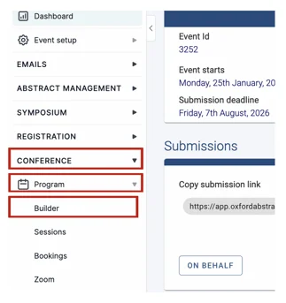
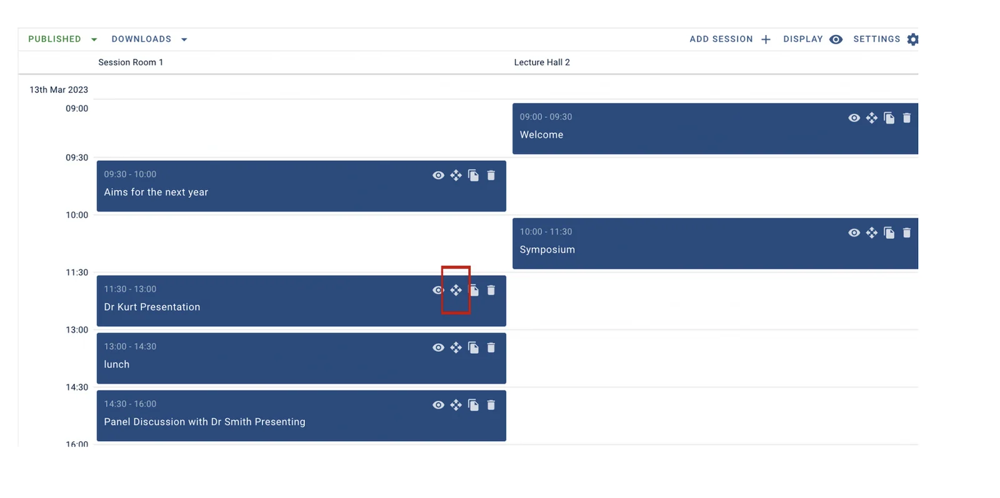
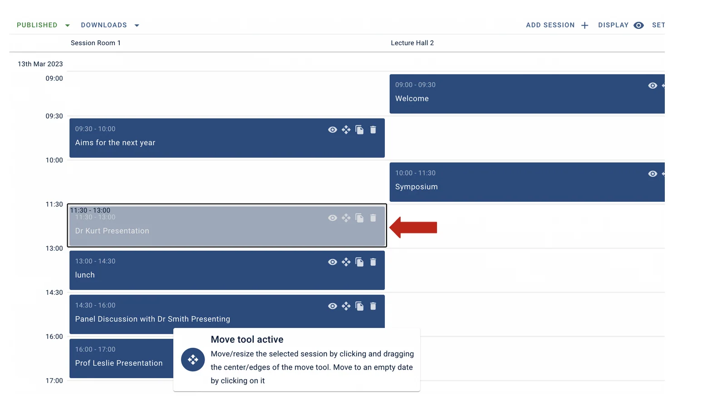
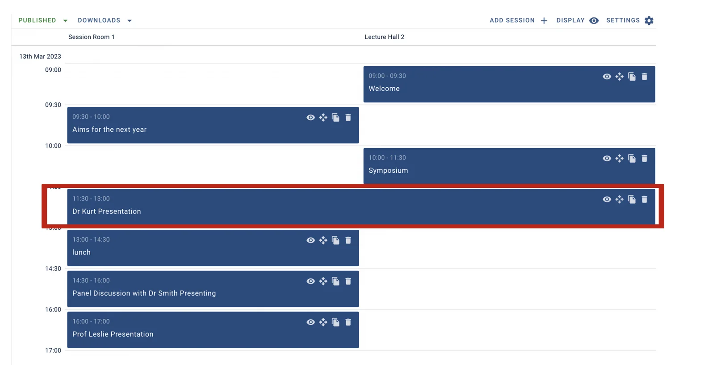

Making a session cross columns in the program timetable
Learn how to make a session cross several columns in the program builder.#
Please note: This information is for Admins Only!
From your Event Dashboard, click on Conference → Program → Builder

On the next screen, find the session you wish to move across both columns and click on the Move Tool.

Now click on the right-hand edge of the session and drag it into the next column.

Let go of the mouse button, and your session will now straddle both columns.

If you want to undo this, click the Move Tool and drag the session back to its original column.
If you need any further assistance, then please get in touch with our Support Desk via this Contact Form.
Did this page solve it?
Thanks — this helps us fix it.
Didn't solve it? Ask our support team
No question is too small, and there's no charge for asking. Raise a ticket and someone who knows the software will pick it up.